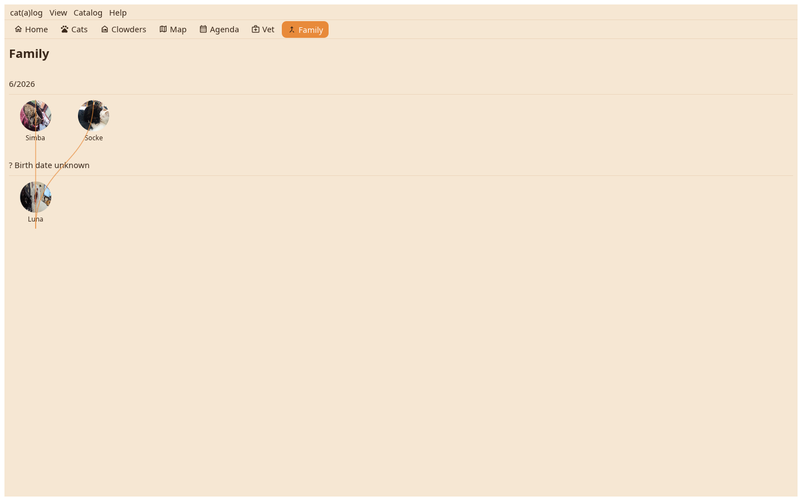

Every cat with kin as its face and its name, laid out from oldest to newest and grouped by the month it was born in; a line joins a mother and her kittens, littermates stand side by side.

Family is derived from the Mother field and the birth date: kittens of one mother born the same day are a litter. A cat without mother, father or kittens is not shown; a cat without a birth date stands in its own row. A click opens the cat.